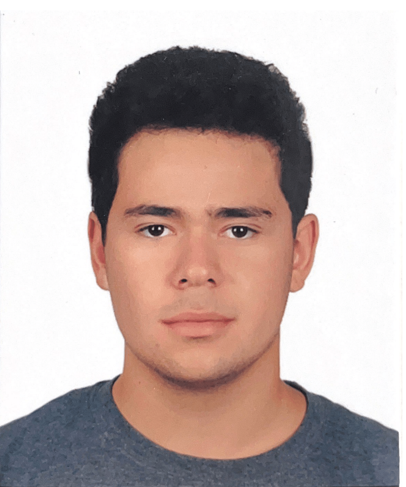

Onur Aroymak

Summary
I'm a fourth year computer engineering student at McGill University.
Education
-
McGill University:
Major in Computer Engineering. Expected to graduate in December 2026.
-
University Of British Columbia:
Bachelor of Applied Sciences.
Work Experience
-
Software Engineering Intern - MSSpektral
May 2025 - July 2025
-
Developed a developer system using TCP/IP protocol
-
Created a public server that could play the role of a web server as well as a modBus server
Skills
-
Technical: Python, C, C++, Java, ARM Assembly, SolidWorks, VHDL, Logisim
-
Languages: English, French, Turkish
Awards and Certification
-
Outstanding International Student Award - University Of British Columbia
Other